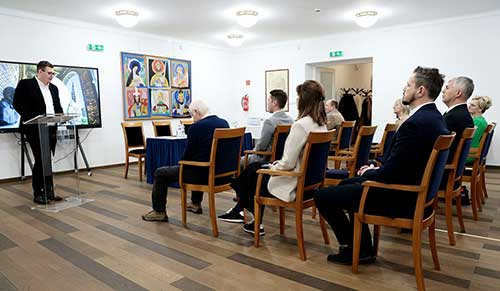
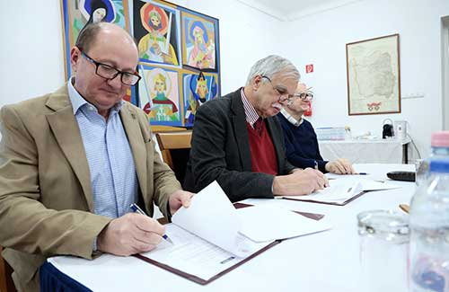
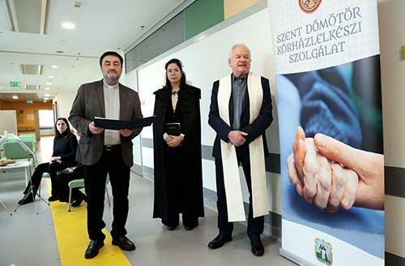
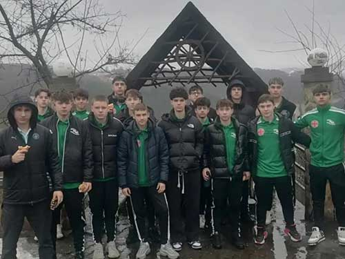
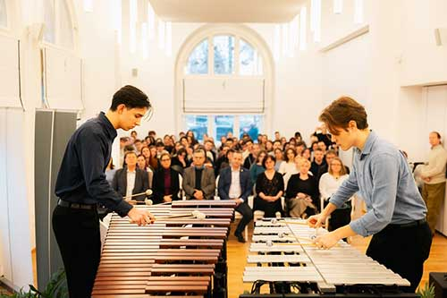
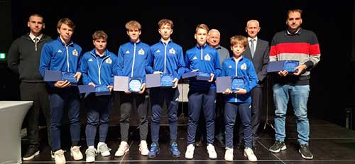

Feltöltési jelentés:
1 Toronyirány_2026-01_p24_CC.indd
Feltöltve: 2026 Jan 6., 13:8
Kis felbontású, de még használható képek:
gem-6887.jpg ::: 259 dpi

gem-6897.jpg ::: 240 dpi

korhazlelkesz.jpg ::: 253 dpi

Gyula-1_uxx.jpg ::: 246 dpi

Kis felbontású, használhatatlan képek:
Gálosi Dávid és György Dávid- a Vántus Szakg-́s 13. évfolyamos növendékeinek előadása..jpg ::: 175 dpi

20260108T1200-CONSISTORY-DAY2-WRAP-1810911-1536x1022.jpg ::: 222 dpi
viber-kep-2025-12-18-22-05-58-176.jpg ::: 192 dpi
